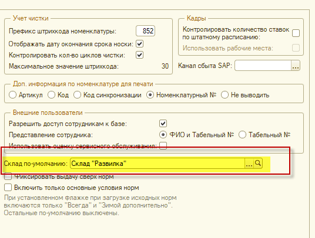

Заполнение справочника «Организации» предполагает создание организации. Чтобы создать организацию, зайдите в меню «Предприятие», раздел «Организации» и нажмите на кнопку «Создать».
Во вкладке «Данные для учета СИЗ» необходимо указать:
1. Учет чистки
1.1. Префикс штрихкода номенклатуры - начальные цифры штрихкода, префикс должен состоять из 3-х цифр и быть уникальным для каждой организации.
1.2. Отображать дату окончания срока носки - этот реквизит определает, выводить ли на этикетку дату окончания срока носки СИЗ.
1.3. Контролировать кол-во циклов чистки - позволяет отслеживать количество циклов чистки СИЗ. При проставленном флажке, если попытаться добавить СИЗ в чистку большее количество раз, чем указано в карточке номенклатуры, документ проведется, но выдаст сообщение о превышении количества циклов чистки. Если данный флажок не проставлен, контроля над кол-вом чисток не будет.
1.4. Максимальное значение штрихкода - здесь отображается максимальный номер штрихкода, созданный в программе на данный момент. С каждым новым штрихкодом значение в этом поле меняется.
2. Кадры
2.1 Контролировать количество ставок по штатному расписанию- позволяет отслеживать количество занимаемых ставок в соответствии со штатным расписанием.
2.2 Использовать рабочие места – флажок устанавливается в случае ведения учета спецодежды и СИЗ непосредственно через аттестацию рабочих мест.
3. Канал сбыта SAP- необходимая настройка для синхронизации с системой клиента «SAP», для корректной выгрузки документов «Переход права собственности».
4. Доп. информация по номенклатуре для печати - влияет на подстановку значения в печатной форме помимо наименования номенклатуры. Возможные значения:
· Артикул;
· Код;
· Код синхронизации;
· Номенклатурный №;
· Не выводить.
5. «Внешние пользователи» - при использовании мобильного приложения
5.1 Разрешить доступ внешним пользователям – возможность подключения сотрудников предприятия к базе через мобильное приложение
5.2 Представление сотрудника: отображение в мобильном приложении
5.3 Использовать оценку сервисного обслуживания – регулирует появление оценки в мобильном приложении
6. Склад по умолчанию: Установленный склад будет проставляться при создании документа выдачи в первую очередь

7. Фиксировать выдачу сверх норм – суть данной опции в том, что если сотрудник износил одежду ранее положенного срока по норме, и необходимо выдать новую, то при указании этого флага в документе выдачи появится столбец «Выдача сверх нормы».
8. Включить только основные условия норм - теперь можно загрузить исходные нормы таким образом, чтобы по умолчанию все дополнительные условия работы у сотрудников были отключены. Включенными будут только "Всегда" и "Зимой дополнительно". Для того, чтобы функционал работал, необходимо установить в организации галочку "Включить только основные условия норм"


Во вкладке «Адреса, телефоны» рекомендуется заполнить контактные данные, в дальнейшем они могут потребоваться при печати документов.

Для удобства в данной вкладке предусмотрены кнопки:
Кнопка «Заполнить адрес из другого поля»;
Кнопка «Написать письмо».
Когда нужные поля будут заполнены, нажмите кнопку «Добавить».
Во вкладке «Информирование сотрудников» включить необходимые опции, по которым будет осуществляться смс/эмэйл информирование, задать шаблон текста SMS
-Информирование о возврате из чистки: после проведения документа возврата из чистки СИЗ формируется сообщение для сотрудников, указанных в этом документе
-Информирование о получении средств защиты: в момент вступления в силу потребности.
Дискретность потребности 1 мес. Если у сотрудника потребность на 15.03.2021, то по потребности он может получить СИЗ начиная с 01.03.2021г.
01 марта система видит, что у сотрудника появилась потребность и начинает рассылать СМС, что ему положено получить СИЗ.
СМС формируются только по потребности по персональным нормам выдачи.
-Информирование о поступлении на склад. Сотруднику приходит оповещение о поступивших СИЗ на склад, которые он не смог получить по той или иной причине. При этом необходимо, чтобы были выполнены операции:
-В документе выдачи СИЗ при указании причины невыдачи указать номенклатуру выдачи и характеристику, необходимую сотруднику. Будет заполнен регистр «Средства защиты к получению» номенклатурой, указанной в документе выдачи;
-Заполнить и провести документ "Поступление номенклатуры" . Система сформирует смс/эмэйл рассылку о том, что СИЗ поступили на склад
После ввода всех необходимых данных по организации нажмите кнопку «Записать и закрыть», тем самым сохранив введенные данные, и в таблице появится созданная организация.

Примечание: обязательными для заполнения являются поля, подчеркнутые красным пунктиром.